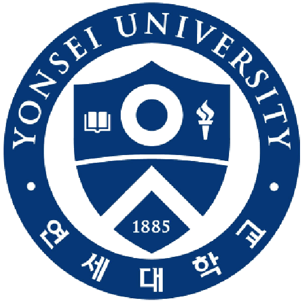

숙명여고
연세대학교
유다영 멘토님 (여)

연세대학교 경제학과 19학번 • 논술 전형
"숙명여고 출신 다영 멘토님의
방향성과 지름길을 제시해주는 멘토링"
방향성과 지름길을 제시해주는 멘토링"
# 정시 준비 방법
# 성적 상승 곡선
# 정시 준비 방법
한 달 4회 PLAN
13%
회당 87,250원
총 할인액 평생
-50,000원
한 학기 12회 PLAN
25%
회당 74,917원
총 할인액
6일 17:13:38 남음
-300,000원
잠시만요!
멘토님과 잘 맞을지 모르겠다면
멘토님과 잘 맞을지 모르겠다면
유다영 멘토님에게 직접 받는
30분 무료 온라인 멘토링 이후
결정하세요
30분 무료 온라인 멘토링 이후
결정하세요
30분 무료 멘토링
플래너 세트
숙명여고 추가 할인
학습 상승 100%
멘토 이력
본인 인증 완료
학교 인증 완료
코로나 안전 완료
-
숙명여고 졸업
-
2019 연세대학교 인문논술전형 합격
-
강남대성 수학 선생님 조교 (2019.01~2019.11)
-
고등학교2학년 영어/중학교 3학년 수학/고등학교 1학년 학습 코칭 경험
숙명여고 선배가 직접 해주는
토링 멘토링 프로그램
토링 멘토링 프로그램
토링 멘토링 프로그램이란?
SKY 대학에 진학한 같은 고등학교 출신 선배가
학습방법 / 내신 / 학교 생활을 도와주는 클래스로,
'1:1 멘토링'과 '멘토링 일지' 2단계로 구성되어 있습니다.
30분 무료 온라인 멘토링을 통해 같은 학교 출신이 해주는 멘토링을 직접 경험해보세요!
학습방법 / 내신 / 학교 생활을 도와주는 클래스로,
'1:1 멘토링'과 '멘토링 일지' 2단계로 구성되어 있습니다.
30분 무료 온라인 멘토링을 통해 같은 학교 출신이 해주는 멘토링을 직접 경험해보세요!
온라인 30분 무료 멘토링
멘토님이 직접 멘티님을 상담! (30분)
멘토링 시작 전, 학생이 멘토님과 직접 얘기해보고 결정할 수
있습니다.
학생과 같은 고등학교에서 어떻게 성공적으로 SKY 대학교에 진학했는지 들어보고 결정하세요!
학생과 같은 고등학교에서 어떻게 성공적으로 SKY 대학교에 진학했는지 들어보고 결정하세요!
+
오프라인 1:1 멘토링
1:1 코칭은 기본! (회당 100분)
매주 같은 학교 선배에게 듣는 생생한 멘토링을 통해
동기부여는 물론 학습습관부터 고등학교별 내신/생기부까지!
동기부여는 물론 학습습관부터 고등학교별 내신/생기부까지!
+
멘토링 일지
스스로 확인하고 돌아볼 수 있도록!
멘토링 했던 내용을 멘토가 매번 멘토링 일지로 작성해
학생 스스로 내가 했던 실수들, 그에 맞는 해답을
반복해서 확인해 스스로의 상태를 인지하고 개선할 수 있습니다.
학생 스스로 내가 했던 실수들, 그에 맞는 해답을
반복해서 확인해 스스로의 상태를 인지하고 개선할 수 있습니다.
토링에서만 제공하는
특별한 혜택!
특별한 혜택!
1.
SKY에 입학한 멘토의 방학 공부법, 학생부 준비법, 동기부여에 관한
1:1 개인 맞춤 멘토링
2.
휘문고, 숙명여고 등 강남 8학군 출신 멘토의 고등학교 꿀 TIP
3.
이제 막 입시를 마쳐 최근 입시 경향에 가장 전문적인 지식을 갖고
있는 20학번, 19학번 SKY 선배들만을 엄섬한 멘토링
숙명여고에서
연세대에 간다고
마음은 단단히 먹었는데...
마음은 단단히 먹었는데...

고등학교 1학년을 대비하는
방학은 어떻게 보내야할까 고민이라면
방학은 어떻게 보내야할까 고민이라면
•
중학교 내신이 좋지 않아
고등학교 생활이 걱정이라면
고등학교 생활이 걱정이라면
•
공부해야할 동기부여를
듬뿍 받아가고 싶다면
듬뿍 받아가고 싶다면
•
막상 어떤 진로를 선택해서
공부해야할지 모르겠다면
공부해야할지 모르겠다면
이제 걱정하지 말고
유다영 멘토님에게 관리받아 보세요.
숙명여고 학생은
숙명여고 선배가 가장 잘 아니까요.
유다영 멘토님에게 관리받아 보세요.
숙명여고 학생은
숙명여고 선배가 가장 잘 아니까요.
유다영 멘토님께
물어봤어요
1.
코로나 때문에 학습습관이 무너졌어요. 어떻게 하면 좋을까요?
학습습관이 무너졌을 때는 자신이 어떤 상황에서 그나마
공부가 잘 되었는지를 떠올려보는게 좋아요 새로운 펜을 샀을
때 새로운 책을 살 때 더 공부의욕이 생긴다면 기꺼이
투자하세요 맛있는 것을 먹으며 공부할 때 그나마 집중이
된다면 맛있는 것을 옆에 두고 공부하세요! 집에 부모님이나
형제가 있다면 공부습관이 잡힐 때까지 옆에서 지켜봐달라고
부탁하거나 친구와 함께 줌을 키고 열심히 하는 모습에 자극을
받으며 공부할 수고 있습니다
2.
멘토님과 같은 고등학교(숙명여고)를 다니고 있습니다. 혹시
우리 학교 내신이나 학생부는 어떤 식으로 준비해야 하나요?
숙명여고는 국어와 영어 두 과목의 1등급 싸움이 굉장히
치열합니다 어떤 난이도로 출제되어도 고득점자가 많이 나와요
따라서 내신 기간 이전에도 국어와 영어는 꾸준히 정리하고
암기해야합니다 수학의 경우 교과서에서 응용으로 많이 나오고
생소한 두문제 정도가 출제되기 때문에 우선 교과서를 최소
3회독해야합니다 저는 개인적으로 학원에서 주는 다른 학교
기출보다는 교과서와 숙명 기출을 여러번 푸는게 훨씬 도움이
되었어요 그리고 수학은 상대적으로 국어 영어 보다는
깔끔하게 문제가 출제되므로 수학 실력을 키우는 쪽으로
평소에 대비하시면 됩니다. 다른 탐구 과목은 선생님께서
주시는 자료를 공부 비중의 90프로로 두고 모두 외워야한다는
마음으로 준비하셔야 합니다 학생부의 경우 내신 1,2등급까지
모두 세특을 작성해주시기 때문에 내신 등급이 가장 중요하고
동아리를 잘 들어가서 활동한 뒤 담당 선생님께 필요한 내용
작성을 부탁드리는 것이 중요합니다
3.
유다영 멘토님은 이런 사람이에요!
저는 고등학교 3학년 때 이과에서 문과로 전향했습니다 논술을
붙을만큼 글 쓰는 것도 좋아하고 수학을 별로 좋아하지는
않지만 꾸역꾸역 이과 공부를 했는데 고등학교 담임 선생님의
권유로 문과로 가게되었고 결국 연세대학교에 입학했습니다.
저는 그래서 학생에게 방향성과 지름길을 제시해주는 멘토의
역할이 크다고 생각합니다 학생에게 더 나은 방향과 계획을
제시해주는 사람이 되어주고 싶습니다!
이런 학생들을 위한
멘토링 입니다.
멘토링 입니다.
숙명여고
최상위 선배에게 관리
받고 싶은 학생들
숙명여고
내신 및 학생부 관리가 궁금한 학생들
왜 공부를 해야 하는지
모르고 그냥 하는 학생들
최상위권으로
도약하고 싶은 학생들
멘토링 커리큘럼
사전 무료 30분 멘토링
멘티 성격 파악 및 멘토링 스타일 결정
30분 무료 멘토링 이 후, 멘토링 계획서 및 제안서 전달
1:1 멘토링
1:1 멘토링은 매주 100분씩 진행됩니다.
정기적인 멘토링으로 학습 관리와 동기부여를 지속적으로 제공합니다. 또한, 아래의 주제들 중 학생이 필요한 부분이 있다면 해당 주제에 관한 맞춤 멘토링을 제공합니다.
정기적인 멘토링으로 학습 관리와 동기부여를 지속적으로 제공합니다. 또한, 아래의 주제들 중 학생이 필요한 부분이 있다면 해당 주제에 관한 맞춤 멘토링을 제공합니다.
동기 부여 멘토링
학생의 현재 상황과 성격을 파악해 가장 잘 맞는 진로를 함께
고민해주고 결과적으로 동기부여되어 공부할 수 있도록
합니다.
학교별 맞춤 멘토링
학생이 다니는 학교에 맞는 내신 준비 / 학생부 준비
방법(교내 경시, 대회 , 세특 등)을 알려드립니다.
학습 방법 멘토링
학생과 같은 환경에서 공부한 멘토들이 터득한 각 과목(국어 /
수학 / 영어 / 탐구)는 어떻게 해야하는지, 코로나로 인해
학습습관이 무너졌을 때는 어떻게 하는지, 공부시간을
조절하고 멘탈을 관리하는 방법까지 정말 100% 활용해서 쓸 수
있는 방법만 알려드리겠습니다.
멘토링 일지 제공
매번 멘토링이 끝난 후, 멘토링 내용을 기반으로 멘토링 일지를
작성합니다.
멘토링 일지에는 학생의 고민, 멘토의 답변, 이 후의 목표 등이
담겨 있습니다.
멘토링 이용 방법 안내
1.
멘토님이 학생이 필요한 부분에 도움을 줄 수 있는지 수업 소개를
읽어보세요
2.
멘토링 신청하기 버튼을 눌러서 멘토링 희망 날짜와 플랜을 선택
후 결제를 진행해주세요.
희망 날짜와 플랜은 언제든지 변경할 수 있습니다.
3.
결제 바로 다음 주부터 멘토링이 진행됩니다. 멘토링 시간은
멘토님과 협의 하에 정해주세요.
4.
멘토링 당일 멘토가 온라인 멘토링이 가능한 줌 링크를 발송해
멘토링을 진행합니다.
5.
멘토의 멘토링이 마음에 들지 않을 시, 동일 학교 출신의 다른
멘토로 언제든지 변경 가능합니다.
생생한 리뷰
${mentorsDetail[resultNum].review[0].user}
${mentorsDetail[resultNum].review[0].date}
${mentorsDetail[resultNum].review[0].content}
${mentorsDetail[resultNum].review[1].user}
${mentorsDetail[resultNum].review[1].date}
${mentorsDetail[resultNum].review[1].content}
${mentorsDetail[resultNum].review[2].user}
${mentorsDetail[resultNum].review[2].date}
${mentorsDetail[resultNum].review[2].content}
계속 할인 받을 수 있는
한달 PLAN이에요!
한달 PLAN이에요!
평생 할인
한달 기준 4회 (회당 100분)
정가
399,000원
총 할인 금액
-50,000원
최종 금액
349,000원
1회당 가격
87,250원
지금 할인 받을 수 있는
한학기 PLAN이에요!
한학기 PLAN이에요!
6일 17:13:38 남음
한학기 기준 12회 (회당 100분)
정가
1,199,000원
총 할인 금액
-300,000원
최종 금액
899,000원
1회당 가격
74,917원
다른 멘토분도 있어요!